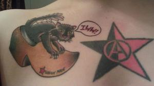

My body, my rules: a case for rape and domestic violence survivors becoming workplace organizers
Submitted on Tue, 12/13/2011 - 4:18pm
Liberté Locke, a Starbucks Workers Union organizer, writes about how violence at work and in our personal lives are similar, how domestic abusers and bosses use the same techniques of control and that we need to fight both.
By Liberté Locke
I was raped by a boyfriend on August 18th, 2006. The very next day I held back tears while I lied to a stranger over the phone about why I was unavailable to go in that day for a second interview for a job that I desperately needed. When I hung up the phone I saw a new text message. It was from him. “It’s not over. It will never be over between us…”
The next day I went in for the second interview. It was inside of the Sears Tower Starbucks in Chicago. I took the train to the interview constantly looking around me and shaking. I needed work. I had just been fired from Target two weeks prior and had no prospects. I knew I would have to go through a metal detector in order to enter the building so despite every instinct in my body I did not bring a knife with me.
“What would you do if you caught a coworker stealing?”
My mind is racing. I’m thinking that I risked my safety by leaving my house for a stupid job that pays $7.75/hr. Aren’t I worth more than that? Aren’t we all worth so much more?
“I’d tell management right away, of course. I’ve never understood why someone would steal from work…”
I tell them what they want me to.
I started working at Starbucks on August 22, 2006. That was a little over five years ago. Every year we have annual reviews where I generally get to argue with someone younger than me who makes significantly more than do about why my hard work, aching back, cracking hands, sore wrists, the bags under my eyes, the burns, the bruises on my arms, the cuts on my knees, the constant degrading treatment by the customers, the “baby, honey, sugar, bitch”, the “hey, you, slut…I said NO whip cream!”s, the staring, the following after work…I get to argue why all that means I’m worth a 33cent raise rather than 22cents, Degrading for any worker. Degrading especially for a woman worker. Only for me, I get to do this every year just four days after the anniversary of when someone I was in love with raped me. My annual review is truly the only reason I’m reminded of the anniversary of the assault.
I wish I was exaggerating but truthfully I’ve just toned down how I really feel about it. Since we’re talking about labor, I could also mention how when I was raped I didn’t leave the house where it happened until the morning because of two main reasons 1) I feared riding the subway home at 3am and 2) I was getting picked up in the morning by my then best friend (and my boyfriend’s other partner) to head to her wealthy parents’ house in the suburbs where they were paying me to clean. Desperately needing to sell my labor in exchange for simple cash kept me laying awake next to my attacker. Not wanting to lose the gig had me lying to him. Promising that I’d never tell anyone. Promising not to leave him. Promises that at the time I wasn’t sure that I wouldn’t keep.
It was when I was on my hands and knees literally scrubbing the floor of her parents’ house that it occurred to me that being poor was truly enough of an assault.
I stood up. I told her everything. I didn’t hear any supportive words. She said she was jealous. I wanted to throw up. I told her to take me home and that I’d rather starve than clean her parents’ house that day.
She gave me the cash even though I was no where near done and drove me home. Both from her guilty conscience, I’m sure. I resent her less these days realizing that his manipulative behavior had gotten to her too. But it was worse for her than me. I was getting out. She was deciding to stay and betray another woman in the process. That’s some pretty heavy manipulation.
In the months after the assault I went to therapy for free through a domestic violence program. I went through exercises that forced me to relive some of my happy memories of him and I together. I didn’t want to. We dated on and off for a couple of years and had definitely had some wonderful times. I wished they’d never happened. I wished I’d never met him. I didn’t want to remember his face, his voice, his scent. I purged my life of everything he gave me and everything that reminded me of him. My therapist wanted to get to the root cause of where the assault came from because I blamed myself so entirely. Thinking things were great before that one night that hit me out of no where. Or so I thought.
After nearly six months of therapy we hit a revelation. He was always manipulative, always verbally abusive. He preyed on my self-esteem and wanted me miserable so that I felt I needed him. So I’d crave his approval and attention. The few days leading up the assault I had started standing up for myself, not taking his shit as much. Refusing sex when I thought he was being an asshole when in the past I would had caved even after he would insult me. My therapist presented the idea that he raped me because he felt he was losing his control over me. It was meant to break me…as you would a horse.
Through therapy I started to feel like I was worth something and that he was the sad loser. Not me. He wanted something from me and getting that something wasn’t enough. He wanted my spirit and body. Ownership over things uncontainable.
When I started to feel stronger and less afraid I really stopped being able to put up with rude customers. Not putting up with rude customers meant facing the bosses’ wrath when the customers complained which then meant I had to stand up to my bosses. Finally the real opportunity came and not wanting to live as a victim anymore took the form of signing a union card with the Industrial Workers of the World.
I learned about organized labor. I decided that if I’m not meant to be some man’s slave than why be a slave to a boss, to a corporation, to a customer?
I looked at bosses as they sat in desks, sipping coffee drinks that they had me make them, pouring over sales numbers they got because of the hard work of me and my coworkers. We worked ourselves to complete exhaustion. Mothers I worked with talked about missing their kid’s first step while making lattes. I’ve known many pregnant women who have worked while dilated, risking their unborn child’s well being and their own, because maternity leave is so short and they wanted as much time as possible with their newborns so they were holding out. I knew the bosses and the company were responsible for the state of things.
The bosses were very manipulative. Abusing you for many shifts in a row, refusing you breaks, calling you stupid, promoting people that sexually harassed you, giving you schedules that made sleep impossible, refusing raises based on petty things like whether you always remembered to wear the required black socks or cover your tattoos. Then when we started organizing they would do this behavior for days and suddenly throw a pizza party. The majority of workers would thank the boss and talk for weeks about how much they really cared about us. How kind they were. How lucky we were.
Suddenly all the abuse faded away and grudges were dropped. Bosses were welcomed back into group conversations and invited to baby showers.
I see no difference between this scenario and the boyfriend hitting his girlfriend in the face and then showing up with flowers & candy and the cycle starting all over again.
I am not ashamed of being raped or manipulated by my ex. I am also not ashamed of leaving him and trying to heal. I am not ashamed of what horrible abuses I’ve experienced and witnessed since beginning to work at Starbucks. I refuse to accept them back after a simple pizza party.
I don’t want pizza. And I don’t want flowers. I want freedom from a life of servitude. I want an end to the abuse.
Yes, I could quit and liken it to breaking up with an abusive boyfriend but the next job would recreate the cycle. The next job would be the next abusive partner.
So I stay. And I fight. I fight through organizing with other survivors of the abuse, my coworkers. Well, at least the ones that have reached rock bottom and now want to climb out. No, not everyone is ready when I meet them to break up with their oppressor. I’ll be here when they are. When they, too, find the courage.
We work together to improve working conditions. Refusing to give them what they want when they are being assholes. Refusing them our labor. The use of our bodies for their own desires.
Under this current system we must make money to survive. To make money we must sell our labor. This is already unjust and disgusting to me. I’m fascinated by the creativity, the skill, and genius of the human mind and body. I feel great pride in being able to make something, teach something, to speak, to write, to learn. How wonderful it is to know humans are capable of so much greatness. The fact that someone was smart enough to exploit this greatness out of others for their own means with as little return to the person who created it as possible is so very heartbreaking. It’s the same heartbreak I feel when I learn of a person staying with an abuser and doing everything they say only to be beaten down again. I always wonder when they will leave. I wonder when they will fight back. I feel this way when I hold a coworker who is sobbing from being yelled at by a boss. I wonder when they will stop taking it. Many workers have. Workers who have started and joined unions. We are survivors.
These past five years have been amazing. I’ve healed from the abuse and degradation of that relationship. I healed through applying my therapist’s teachings to my life at work.
I refuse to be a victim any more. I’m determined to remember my worth and to try to help others heal from years of abuse at the hands of employers and customers. It isn’t enough to walk away if you still haven’t realized your worth because low self-esteem for our labor can just put us continually in the same fucked up situations. Before we know it we’ve been broken down quite literally and have nothing to show for it. The big bosses will have the property they purchased with the money they kept from us. They will have the best doctors, their kids will receive the best education, their parents will be provided for, and they will enjoy the fruits of our labor while we starve. It is no different than the significant other that swipes your paycheck.
The burns from the extra hot milk don’t hurt any less when I realize that drink cost my hourly wage but in one hour I will have made over a hundred of them.
Don’t listen when a boss or an abused coworker tries to make you believe that your labor is worth is nothing. Don’t believe them when they belittle your job because it’s in fast food, or retail. Whether you sit at a desk, deliver a pizza, clean a toilet, sew a pair of pants, or act on stage in order to pay your bills…remember if the bosses could do it by themselves they would. Remember they need you way more than you need them. Yes, the abuse can get worse when you stand up and fight back. Much like what happened to me. But if it took being raped to get away from such a horribly destructive relationship than that is simply what it took. If it took recovering from that to teach me about liberation and refuse servitude then so be it.
I will not be a slave. I will not be a servant. I do not consent to the abuse of my mind & body or the belittlement of my spirit. When they try to divide us it is like the partner that says you can’t see your friends. It is to isolate you so you feel alone, helpless, like your screaming and no one can hear you. Don’t let them do that. Refuse isolation. Reach out to your coworkers. Refuse to do unsafe work. Demand the money you deserve. Those that do the most work should live in the most luxury. We earned it. It is ours.
If you’ve found a way out of an abusive relationship or situation in your life than you know how badly you needed out. You’ve gone over in your mind a thousand times just how bad it could have gotten. You feel grateful to have walked away with your life. Imagine if all the horrible treatment at work ended. Imagine you didn’t dread clocking in. What if the boss now feared you? What if they wouldn’t dare hit you again, call you a name, harass you? What if they gave you all your breaks on time and didn’t refuse your overtime pay? What if you set your schedule and decided the tasks you’d take on? What if you set your pay rate?
What would it be like to finally be free?
Originally posted on December 4, 2011 on Facebook. Shared with permission from author.